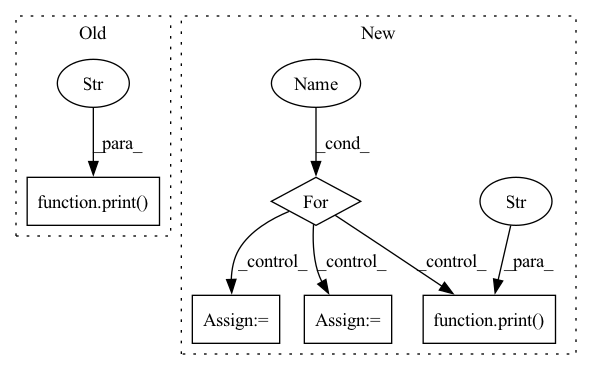

Pattern ID :24400
Before Change
d_loss.backward()
self.d_optimizer.step()
self.d_optimizer.zero_grad()
print(f" Discriminator iteration: {d_iter}/{self.critic_iter}, \
loss_fake: {d_loss_fake}, loss_real: {d_loss_real}" )
for p in self.D.parameters():
p.requires_grad = False
for p in self.G.parameters():
p.requires_grad = TrueAfter Change
def train(self, train_dataloader):
self.g_optimizer.zero_grad()
for g_iter in range(self.generator_iters):
// Requires grad, Generator requires_grad = False
for p in self.D.parameters():
p.requires_grad = True
p.data.clamp_(-0.01, 0.01)
for p in self.G.parameters():
p.requires_grad = False
self.d_optimizer.zero_grad()
for d_iter in range(self.critic_iter):
for i, (data, label) in enumerate(train_dataloader):
data = torch.tensor(data)
train_data = data.to(env["device"])
d_loss_real = self.D(train_data).mean()
z = torch.randn(train_data.shape[0], self.noise_dim, device=train_data.device)
fake_images = self.G(z)
d_loss_fake = self.D(fake_images).mean()
d_loss = d_loss_fake - d_loss_real
d_loss.backward()
self.d_optimizer.step()
self.d_optimizer.zero_grad()
print(f" Discriminator iteration: {d_iter}/{self.critic_iter}, \
loss_fake: {d_loss_fake}, loss_real: {d_loss_real}" )
for p in self.D.parameters():
p.requires_grad = False
for p in self.G.parameters():
p.requires_grad = True
for i, (data, label) in enumerate(train_dataloader):
data = torch.tensor(data)
train_data = data.to(env["device"])
z = torch.randn(train_data.shape[0], self.noise_dim, device=train_data.device)
fake_images = self.G(z)
g_loss = - self.D(fake_images).mean()In pattern: SUPERPATTERN
Frequency: 4
Non-data size: 5
Instances Fragment ID: 75748419
Project Name: ain-soph/trojanzoo
Commit Name: 29ef13a4f7b41cb83bda18e549dfbb3755254244
Time: 2020-08-31
Author: corazju@zju.edu.cn
File Name: trojanzoo/attack/backdoor/clean_label.py
M Class Name: WGAN
N Class Name: WGAN
M Method Name: train(2)
N Method Name: train(2)
M Parent Class: object
N Parent Class: object
M File Name: trojanzoo/attack/backdoor/clean_label.py
N File Name: trojanzoo/attack/backdoor/clean_label.py
M Start Line: 222
M End Line: 255
N Start Line: 229
N End Line: 269
Before Change
is provided, a single dataset corresponding to the subset value is returned.
print_to_end("-")
print("[*] Start loading dataset" )
// build initial dataset to read data.
datasets = _build_dataset(dataset_cfg)
// return every subset as a dictionary if `subset` is NoneAfter Change
subset_types = [subset]
datasets = {}
for idx, subset_key in enumerate(subset_types):
print(f"Loading `{subset_key}` dataset subset." )
dataset_subset_cfg = dataset_cfg["dataset_subset_cfg"][subset_key]
if dataset_subset_cfg is None:
dataset_subset_cfg = {}
assert isinstance(
dataset_subset_cfg, dict
), "Expected a dict, got {}.".format(dataset_subset_cfg)
dataset_subset_cfg = merge_config(
dataset_cfg["dataset_base_cfg"], dataset_subset_cfg
)
// create dataset.
datasets[subset_key] = catalog.dataset.build_dataset(
dataset_type=dataset_subset_cfg["file"],
name=dataset_subset_cfg.get("name", ""),
**dataset_subset_cfg.get("args", {}), Fragment ID: 75748418
Project Name: krenerd/awesome-modular-pytorch-lightning
Commit Name: c66de72dcdcd6b80aab9e063eaedf9ba3e6f3061
Time: 2022-07-22
Author: 48239275+krenerd@users.noreply.github.com
File Name: main.py
M Class Name: Experiment
N Class Name: Experiment
M Method Name: get_base_dataset(3)
N Method Name: get_base_dataset(3)
M Parent Class:
N Parent Class:
M File Name: main.py
N File Name: main.py
M Start Line: 190
M End Line: 193
N Start Line: 205
N End Line: 231
Before Change
def main(unused_argv):
print("Ploting run" , FLAGS.rollout_path)
with open(FLAGS.rollout_path, "rb") as fp:
rollout_data = pickle.load(fp)
fig = plt.figure(figsize=(19.2, 10.8))
ax = fig.add_subplot(111, projection="3d")After Change
// path_prefix = "/home/kit/anthropomatik/sn2444/meshgraphnets/output/deforming_plate/"
// path_suffix = "rollout/rollout.pkl"
// rollout_paths = ["Mon-Jan-31-05-04-38-2022/2", "Mon-Jan-31-05-10-30-2022/2", "Mon-Jan-31-05-20-38-2022/2", "Mon-Jan-31-05-35-42-2022/2", "Mon-Jan-31-05-39-05-2022/2", "Mon-Jan-31-08-28-21-2022/2"]
for rollout_path in rollout_paths:
run_path = os.path.join(path_prefix, rollout_path)
all_subdirs = [os.path.join(run_path, d) for d in os.listdir(run_path) if
os.path.isdir(os.path.join(run_path, d))]
save_path = max(all_subdirs, key=os.path.getmtime)
data_path = os.path.join(path_prefix, save_path, path_suffix)
print("Ploting run" , save_path)
with open(data_path, "rb") as fp:
rollout_data = pickle.load(fp)
fig = plt.figure(figsize=(19.2, 10.8))
ax = fig.add_subplot(111, projection="3d")
skip = 10
num_steps = rollout_data[0]["gt_pos"].shape[0]
// print(num_steps)
num_frames = num_steps
// compute bounds
bounds = []
index_temp = 0
for trajectory in rollout_data:
index_temp += 1
// print("bb_min shape", trajectory["gt_pos"].shape)
bb_min = torch.squeeze(trajectory["gt_pos"], dim=0).cpu().numpy().min(axis=(0, 1))
bb_max = torch.squeeze(trajectory["gt_pos"], dim=0).cpu().numpy().max(axis=(0, 1))
bounds.append((bb_min, bb_max))
def animate(num):
// step = (num * skip) % num_steps
traj = 0
// traj = (num * 3) // num_steps
step = (num * 10) % num_steps
ax.cla()
bound = bounds[traj]
ax.set_xlim([bound[0][0], bound[1][0]])
ax.set_ylim([bound[0][1], bound[1][1]])
ax.set_zlim([bound[0][2], bound[1][2]])
pos = torch.squeeze(rollout_data[traj]["pred_pos"], dim=0)[step].to("cpu")
original_pos = torch.squeeze(rollout_data[traj]["gt_pos"], dim=0)[step].to("cpu")
// print(pos[10])
faces = torch.squeeze(rollout_data[traj]["faces"], dim=0)[step].to("cpu")
ax.plot_trisurf(pos[:, 0], pos[:, 1], faces, pos[:, 2], shade=True)
ax.plot_trisurf(original_pos[:, 0], original_pos[:, 1], faces, original_pos[:, 2], shade=True, alpha=0.3)
ax.set_title("Trajectory %d Step %d" % (traj, step))
return fig,
anima = animation.FuncAnimation(fig, animate, frames=math.floor(num_frames * 0.1), interval=100)
writervideo = animation.FFMpegWriter(fps=30)
anima.save(os.path.join(save_path, "ani.mp4"), writer=writervideo)
// plt.show(block=True)
Fragment ID: 75748434
Project Name: wwmark/meshgraphnets
Commit Name: eed20dd8a346a7fc237279d136f08b426d5d27d4
Time: 2022-02-11
Author: ruoheng.ma@gmail.com
File Name: plot_cloth.py
M Class Name: AnonimousClass
N Class Name: AnonimousClass
M Method Name: main(1)
N Method Name: main(1)
M Parent Class:
N Parent Class:
M File Name: plot_cloth.py
N File Name: plot_cloth.py
M Start Line: 45
M End Line: 87
N Start Line: 47
N End Line: 105
Before Change
def main(unused_argv):
print("Ploting run" , FLAGS.rollout_path)
with open(FLAGS.rollout_path, "rb") as fp:
rollout_data = pickle.load(fp)
fig = plt.figure(figsize=(19.2, 10.8))
ax_origin = fig.add_subplot(231, projection="3d")After Change
path_prefix = "E:\\meshgraphnets\\output\\deforming_plate\\"
path_suffix = "rollout\\rollout.pkl"
rollout_paths = ["Tue-Jan-25-17-50-18-2022\\1", "Fri-Jan-28-13-53-24-2022\\1"]
for rollout_path in rollout_paths:
save_path = os.path.join(path_prefix, rollout_path)
data_path = os.path.join(path_prefix, rollout_path, path_suffix)
print("Ploting run" , save_path)
with open(data_path, "rb") as fp:
rollout_data = pickle.load(fp)
fig = plt.figure(figsize=(19.2, 10.8))
ax_origin = fig.add_subplot(231, projection="3d")
ax_pred = fig.add_subplot(234, projection="3d")
ax_cur_positions = fig.add_subplot(235, projection="3d")
ax_cur_velocities = fig.add_subplot(236, projection="3d")
skip = 10
num_steps = rollout_data[0]["gt_pos"].shape[0]
// print(num_steps)
num_frames = num_steps
// compute bounds
bounds = []
index_temp = 0
for trajectory in rollout_data:
index_temp += 1
// print("bb_min shape", trajectory["gt_pos"].shape)
bb_min = torch.squeeze(trajectory["gt_pos"], dim=0).cpu().numpy().min(axis=(0, 1))
bb_max = torch.squeeze(trajectory["gt_pos"], dim=0).cpu().numpy().max(axis=(0, 1))
bounds.append((bb_min, bb_max))
def animate(num):
// step = (num * skip) % num_steps
// traj = 0
skip = 1
traj = (num * skip) // num_steps
step = (num * skip) % num_steps
ax_origin.cla()
ax_pred.cla()
ax_cur_positions.cla()
ax_cur_velocities.cla()
bound = bounds[traj]
ax_origin.set_xlim([bound[0][0], bound[1][0]])
ax_origin.set_ylim([bound[0][1], bound[1][1]])
ax_origin.set_zlim([bound[0][2], bound[1][2]])
ax_pred.set_xlim([bound[0][0], bound[1][0]])
ax_pred.set_ylim([bound[0][1], bound[1][1]])
ax_pred.set_zlim([bound[0][2], bound[1][2]])
// ax_cur_velocities.set_xlim([bound[0][0], bound[1][0]])
// ax_cur_velocities.set_ylim([bound[0][1], bound[1][1]])
// ax_cur_velocities.set_zlim([bound[0][2], bound[1][2]])
ax_cur_positions.set_xlim([bound[0][0], bound[1][0]])
ax_cur_positions.set_ylim([bound[0][1], bound[1][1]])
ax_cur_positions.set_zlim([bound[0][2], bound[1][2]])
pos = torch.squeeze(rollout_data[traj]["pred_pos"], dim=0)[step].to("cpu")
original_pos = torch.squeeze(rollout_data[traj]["gt_pos"], dim=0)[step].to("cpu")
cur_positions = torch.squeeze(rollout_data[traj]["cur_positions"], dim=0)[step].to("cpu")
cur_velocities = torch.squeeze(rollout_data[traj]["cur_velocities"], dim=0)[step].to("cpu")
faces = torch.squeeze(rollout_data[traj]["faces"], dim=0)[step].to("cpu")
// ax.plot_trisurf(pos[:, 0], pos[:, 1], faces, pos[:, 2], shade=True)
// later = torch.cat((faces[:, 2:4], torch.unsqueeze(faces[:, 0], 1)), -1)
// faces = torch.cat((faces[:, 0:3], later), 0)
// print(faces.shape)
// ax.plot_trisurf(pos[:, 0], pos[:, 1], faces, pos[:, 2], shade=True)
ax_origin.plot_trisurf(original_pos[:, 0], original_pos[:, 1], faces, original_pos[:, 2], shade=True, alpha=0.3)
ax_pred.plot_trisurf(pos[:, 0], pos[:, 1], faces, pos[:, 2], shade=True, alpha=0.3)
// ax_cur_velocities.plot_trisurf(cur_velocities[:, 0], cur_velocities[:, 1], faces, cur_velocities[:, 2], shade=True, alpha=0.3)
// ax_cur_positions.plot_trisurf(cur_positions[:, 0], cur_positions[:, 1], faces, cur_positions[:, 2], shade=True, alpha=0.3)
"""verts = original_pos
for i in np.arange(len(faces)):
square = [verts[faces[i, 0]], verts[faces[i, 1]], verts[faces[i, 2]], verts[faces[i, 3]]]
face = p3d.art3d.Poly3DCollection(square)
// face.set_color(colors.rgb2hex(sp.rand(3)))
// face.set_edgecolor("k")
// face.set_alpha(0.5)
ax.add_collection3d(face)"""
"""step_polygons = rollout_data[traj]["gt_pos"][step]
for polygon in step_polygons:
ax.add_collection3d(polygon)"""
// ax.plot_surface(original_pos[:, 0], original_pos[:, 1], original_pos[:, 2], shade=True, alpha=0.3)
ax_origin.set_title("ORIGIN Trajectory %d Step %d" % (traj, step))
ax_pred.set_title("PRED Trajectory %d Step %d" % (traj, step))
ax_cur_positions.set_title("CUR_POSITION Trajectory %d Step %d" % (traj, step))
ax_cur_velocities.set_title("CUR_VELOCITY Trajectory %d Step %d" % (traj, step))
return fig,
anima = animation.FuncAnimation(fig, animate, frames=math.floor(num_frames * 0.1), interval=100)
writervideo = animation.FFMpegWriter(fps=30)
anima.save(os.path.join(save_path, "ani.mp4"), writer=writervideo)
// plt.show(block=True)
Fragment ID: 75748417
Project Name: wwmark/meshgraphnets
Commit Name: cba01dffc57412c5296a68c40c90a417fa3fc69b
Time: 2022-01-29
Author: ruoheng.ma@gmail.com
File Name: plot_deform.py
M Class Name: AnonimousClass
N Class Name: AnonimousClass
M Method Name: main(1)
N Method Name: main(1)
M Parent Class:
N Parent Class:
M File Name: plot_deform.py
N File Name: plot_deform.py
M Start Line: 33
M End Line: 126
N Start Line: 35
N End Line: 136